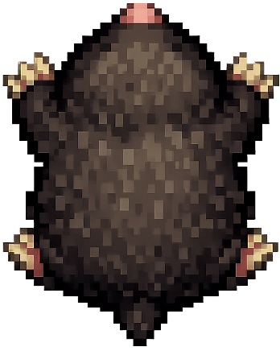
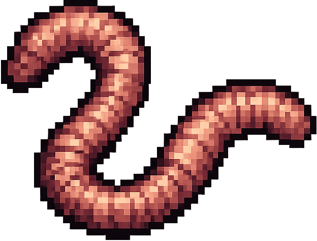

Micro Project - Final
In this sketch/game, the user has to navigate a maze while blind and
beat a timer in order to win. The user controls an avatar (the mole)
that can only move inside the maze, but the maze disappears as soon as
the game starts, so they have to remember the layout of the maze in
order to navigate it. The main variable is "gameStarted", which checks
when the game begins, but the variables that make up the maze are also
important. The things that change with user interaction are movement,
the timer, the disappearance of the maze on start, and the brief
reappearance of the maze when the user presses the space bar. There are
3 levels, with each having a shorter timer than the last. If the user
beats all 3 levels, they win the game. The game can be reset by pressing
"R" upon either losing or winning.
Current Build

The tension in this system comes mainly from the timer the user will
have to beat in order to win, as well as the blind maze navigation.

Pressures